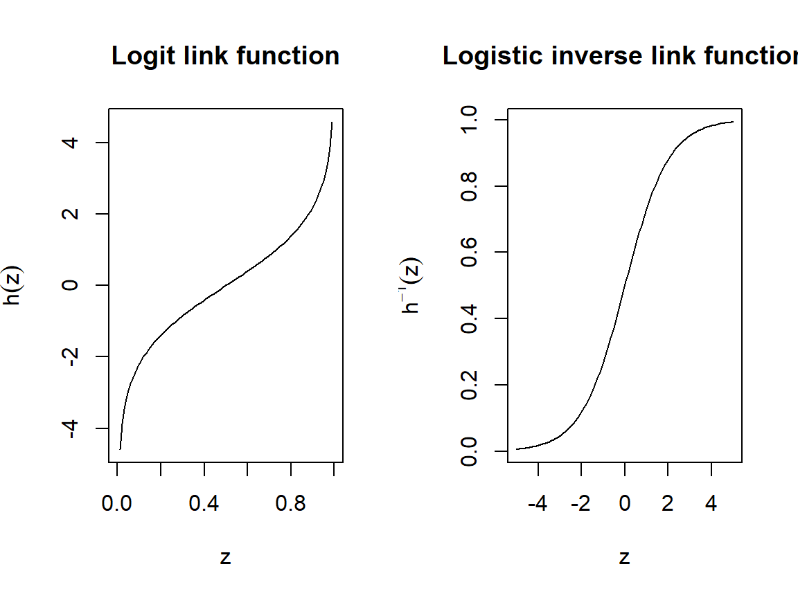

7 Generalised Linear Models
\[ \def\x{\mathbf{x}} \def\Rr{\mathbb{R}} \newcommand{\argmin}{\mathop{\rm argmin}} \newcommand{\argmax}{\mathop{\rm argmax}} \def\F{\mathcal{F}} \def\hbbeta{\hat{\boldsymbol{\beta}}} \def\bbeta{\boldsymbol{\beta}} \def\X{\mathbf{X}} \def\y{\mathbf{y}} \def\hg{\hat g} \]
In the previous chapter we looked at the “standard” linear model, and a variety of regularised variants of the Ordinary Least Squares (OLS) model. Linear models have the advantage of being interpretable, they are computationally efficient to compute/estimate and have comparatively low variance. However, there are some obvious situations where a “standard” linear model is not appropriate
Naturally when the true function \(g^*\) is very far from linear, we may be sacrificing significantly on accuracy by choosing to fit a linear model. But there is something even more fundamental: What if the response variable, \(Y\), is innately unsuited to the standard regression context \(Y = g^*(X) + \epsilon\), regardless of the form of \(g^*\)?
Example: Type II Diabetes Risk
Suppose we collected information from a group of people not diagnosed with Type II diabetes; pertaining to genetic, biometric and lifestyle factors. We then followed them for a period of ten years and noted whether or not they subsequently developed the condition during that period. As a statistician or data scientist we may wish to use these data in order to understand the key factors (covariates) which made people more likely to develop the condition, or to fit a model which could predict whether or not other individuals in the population are likely to become diabetic in the next decade.
Our response variable is categorical: Either an individual developed the condition (category 1) or they didn’t (category 0). If we fit a linear model to predict \(Y\) from the covariates we collected, the outputs/predictions from the model would not neatly fall into these categories, but would instead span some interval and could even be negative.
Although there are some simple heuristics we could apply to “transform” the outputs from a linear model into such a categorisation, and perhaps you have even thought of a few yourself, it should be clear that these are not statistically sound and are certainly far from optimal. Fortunately, there is a far more elegant approach and is the topic of this chapter.
7.1 Generalised Predictive Modelling
We now consider a more general setting than we encountered before, and take a step back from the “standard” regression context to the general predictive modelling set-up. That is, we have at our disposal a sample of observations of covariates (still called \(X\)) and a response variable (still called \(Y\)), and our objective is to use these data to obtain a model which we can use to predict likely/appropriate values for the response when given new sets of values for the covariates.
Whether such a model is useful or not will depend strongly on how we choose to model the situation, so let’s cast our minds back to our introduction to probability and statistics. There we encountered multiple random variables, and their probability distributions, and situations where they may be appropriate for modelling. We could model our response variable as having one of these distributions, for example.
7.1.1 Link Functions
As we are in the predictive modelling context, we are ultimately interested in how the response is related to the covariates, and how to use these relationships for prediction.
As described in Chapter 4, predictive modelling is ultimately about modelling features of the conditional distribution(s) of \(Y|X\). In particular we may be interested in how the expected value of \(Y\) depends on \(X\), however whereas in the standard regression setting where \(Y = g^*(X) + \epsilon\) we did not have any limitations on what values \(E[Y|X]\) could be (or at least we assumed there was no such limitation), in a more general setting we can connect the valid range of values that \(E[Y|X]\) could potentially take to the outputs from a regression function through a link function \(h\), i.e., through a more generalised regression equation
\[ h\left(E[Y|X]\right) = g^*(X). \]
It should be clear that the standard regression setting is a special case of this where the link function is simply the identity \(h(y) = y\).
If we knew that \(E[Y|X]\) had to be positive then we could set, for example, \(h(z) = \exp(z)\).
There are thus two main ingredients beyond what we had for the standard regression problem:
We need an appropriate probability distribution with which to model the response
We need to choose an appropriate link function, \(h\).
Importantly we need \(h\) to be invertible so that \(E[Y|X] = h^{-1}(g^*(X))\) is well defined.
- We can assume without loss of generality that \(h^{-1}\) should be strictly increasing over the range of \(g^*\).
We should choose \(h\) so that the outputs of \(h^{-1}\) cover only the plausible values for \(E[Y|X]\).
- For example \(h\) could be the exponential function if we only want positive estimates for \(E[Y|X]\) or \(h\) could be the logit function if \(E[Y|X]\) must lie between zero and one (we will come back to this when we look at logistic regression a little bit later).
We also have the ingredients from the standard regression problem: (i) from which collection of functions, \(\F\), should I select my estimate(s) for \(g^*\); and (ii) what loss function should we use for training/fitting/estimation?
For (i), the same considerations in choosing \(\F\) apply regardless of context:
If we choose a limited set of functions then we may not be able to pick up on the complexity of \(g^*\), leading to bias.
If \(\F\) is a very rich collection of functions, including some with very complex structure, we may suffer from high variance in any fitted models unless we include some regularisation strategy.
The particular setting where \(\F\) is the collection of all linear (or affine) functions then we have what are known as Generalised Linear Models (GLMs).
7.1.2 Loss Functions from the Likelihood
As statisticians and/or statistical data scientists we should always have at the back of our minds the potential of using maximum likelihood to perform estimation. The same applies in a predictive modelling context.
Let’s suppose that the density function or mass function (depending on whether \(Y\) is continuous or discrete) for \(Y\) is given by \(f_Y\) and is parameterised by its mean value which we will call \(\mu\). From an estimation perspective, maximising the log-likelihood, over choices of estimates for \(g^*\), would lead to an estimate
\[ \hg = \argmax_{g \in \F} \sum_{i=1}^n \log\left(f_Y(y_i | \mu = h^{-1}(g(\x_i)))\right). \]
When we talk about training, however, we typically focus on minimising a loss function, and so a natural choice for \(L(y, \hat y)\) can be given by \(L(y, \hat y) = -\log\left(f_Y(y_i| \mu = \hat y)\right)\).
In fact it can easily be shown that maximising the Gaussian likelihood is equivalent to minimising the squared error loss function, and so we had already actually been doing this for the standard regression context.
7.2 Classification and Logistic Regression
We spoke briefly about the classification problem when we introduced the predictive modelling framework explicitly in Chapter 4. In particular classification refers to the situation where the response variable is categorical, and the different categories are typically referred to as classes and the values of the response are often called the class labels. The diabetes example we described above is an example of a binary classification problem since there are exactly two classes. When there are more than two classes we refer to this as a multiclass problem and often we combine the outputs of multiple binary classification models in order to perform multiclass classification. A lot of focus, therefore, is placed on binary classification models.
7.2.1 Logistic Regression
Logistic regression is arguably the most commonly encountered generalised linear model, and is a natural application of the generalised predictive modelling framework described above to the binary classification problem.
Specifically, when a random experiment has only two potential outcomes (e.g. the allocation to one of two classes) then the situation may be modelled using a Bernoulli random variable, i.e. \(Y = 0\) if allocation is to the first class and \(Y = 1\) if allocation is to the second class, and we have \(P(Y=1) = 1-P(Y=0).\) Recall that when we introduced the binomial and Bernoulli random variables we spoke of outcome \(1\) being a “success”, however not with any implication that this outcome is necessarily favourable compared with the other outcome, only that it may represent an outcome of interest compared with the alternative. Nonetheless in the classification problem it is ultimately arbitrary which class we label with the value \(1\) and which we label with the value \(0\) as long as we are consistent and in the end communicate our findings appropriately.
- We return to this a little later, since different functions in R sometimes handle the allocation of which outcome is “of interest” differently.
Now, notice that when \(Y\) has a Bernoulli distribution then \(E[Y] = P(Y=1)\), and so within the GLM framework when we are modelling in terms of \(E[Y|X]\) we are actually modelling in terms of \(P(Y = 1|X)\). Since \(E[Y|X]\) is equal to a probability we therefore want our inverse link function to map all potential outcomes of the underlying linear model (whose output is the entire real line) to the space of probabilities. All increasing functions with this property are just the cumulative distribution functions of some random variables, and the most popular choices are to use the cdfs of the standard normal (leading to probit regression) and the so-called logistic distribution, leading to name logistic regression.
The Logistic and Logit Functions
The logistic function (cdf of the logistic distribution) is also commonly known as the sigmoid function and plays an important role in neural networks (especially earlier versions), and is given by \(f(z) = \frac{1}{1 + \exp(-z)}\), with inverse \(f^{-1}(z) = \log\left(\frac{z}{1-z}\right)\) known as the logit function. Since it is the inverse link function which takes the form of the logistic cdf, we have
\[\begin{align*} h(z) = \log\left(\frac{z}{1-z}\right), \ h^{-1}(z) = \frac{1}{1+\exp(-z)}. \end{align*}\]
### Plotting the logit and logistic functions
par(mfrow = c(1, 2))
z <- seq(0, 1, length = 100)
plot(z, log(z/(1-z)), ylab = expression(h(z)), main = "Logit link function", type = 'l')
z <- seq(-5, 5, length = 100)
plot(z, 1/(1+exp(-z)), ylab = expression(h^-1*(z)), main = "Logistic inverse link function", type = 'l')
Estimation in Logistic Regression
Now, in the context of GLMs recall that we are modelling \(E[Y|X]\) from the perspective that \(h^{-1}(g^*(X)) = E[Y|X]\), and we are selecting our estimate for \(g^*(X)\) from the collection of all linear (affine) functions of \(X\). For convenience let’s use the notation \(q(X) = E[Y|X]\), which in the context of logistic regression is also equal to \(P(Y = 1|X)\). We may therefore write
\[\begin{align*} \hat q(X) = h^{-1}\left(\hat \beta_0 + \sum_{j=1}^p \hat \beta_j X_j\right) = \frac{1}{1 + \exp(-\hat \beta_0 - \sum_{j=1}^p \hat \beta_j X_j)}, \end{align*}\]
where \(\hbbeta\) is the solution arising from maximising the log-likelihood (or minimising the negative log-likelihood if we want to think of this as a loss function).
Interpreting the Logistic Regression Coefficients
The logit function has a convenient interpretation from the point of view of the odds of an outcome. The odds of an outcome is simply the ratio of the probability that the outcome occurs and the probability it doesn’t occur. For example, in the sporting context we may refer to the odds of one team winning being “five to one” which, assuming no ties or draws, means the team is five times more likely to win than to lose or that the ratio of the probability they win and the probability they lose is equal to five. Now, recall that for \(z \in (0, 1)\) the logit link function is equal to \(h(z) = \log(\frac{z}{1-z})\). When applying this function to \(q(X) = P(Y=1|X)\) and asserting that our estimate for \(h(q(X))\) takes the form of a linear function, we have
\[ h(\hat q(X)) = \log\left(\frac{\hat q(X)}{1-\hat q(X)}\right) = \hat \beta_0 + \sum_{j=1}^p \hat \beta_j X_j, \]
that is, the linear function on the right hand side above represents the estimate of the log-odds of the event \(Y=1\) given \(X\).
So what exactly does this mean for our coefficients? Firstly, the sign of the coefficients have an analogous interpretation to what they had in the ordinary linear regression context, where now a positive coefficient tells us that the corresponding covariate is positively related to the probability that \(Y\) takes the value \(1\). The magnitude in the change of this probability, however, is better interpreted from the point of view of the odds, where a one unit increase in variable \(X_j\) is associated with an increases in the log-odds of \(Y\) being equal to 1 by an amount equal to \(\hat \beta_j\). Alternatively, and equivalently, we could say that a one unit increase in variable \(X_j\) changes the odds of \(Y = 1\) by a factor \(\exp(\hat \beta_j)\).
7.2.1.1 Logistic Regression in R
The function glm allows us to fit generalised linear models directly from the contents of R’s base distribution. The main arguments are the same as those passed to the lm function, i.e. a formula, describing which is the response and which are the covariates to be used, and a data frame containing all associated variables. However, we now also need to specify which distribution (or more precisely which distribution “family”) we are using to model the response. The glm function has a default link function for each family of distributions, but this can also be specified. For example when fitting a logistic regression model this can be done by either setting family = "binomial" or family = binomial(link = "logit").
Let’s look at a simple example. The Pima.tr data set in the MASS package (included in R’s base distribution) contains data on a group of native American women, including whether or not they have diabetes according to the criteria set out by the World Health Organisation. Note that the .tr refers to “training” and there is an additional Pima.te data set for testing, however we will only look at this later on. First let’s load the data and see what variables are included.
### First load the MASS library and then the data
library(MASS)
data(Pima.tr)
### We can then look at the names of the variables, and the first few entries
str(Pima.tr)## 'data.frame': 200 obs. of 8 variables:
## $ npreg: int 5 7 5 0 0 5 3 1 3 2 ...
## $ glu : int 86 195 77 165 107 97 83 193 142 128 ...
## $ bp : int 68 70 82 76 60 76 58 50 80 78 ...
## $ skin : int 28 33 41 43 25 27 31 16 15 37 ...
## $ bmi : num 30.2 25.1 35.8 47.9 26.4 35.6 34.3 25.9 32.4 43.3 ...
## $ ped : num 0.364 0.163 0.156 0.259 0.133 ...
## $ age : int 24 55 35 26 23 52 25 24 63 31 ...
## $ type : Factor w/ 2 levels "No","Yes": 1 2 1 1 1 2 1 1 1 2 ...As always if we want more information on something we can use the help function. For example, full descriptions of these variables can be seen by calling help(Pima.tr).
Let’s now fit a logistic regression model. Note that the response variable is called type and is already encoded as a factor variable
### We can now fit a logistic regression model to the data
logistic_mod <- glm(type~., data = Pima.tr, family = "binomial")
# we could equally have used glm(type~., data = Pima.tr, family = binomial(link = "logit))The output from glm has many of the same contents as that from lm, including information on the “significance” of each of the variables. However, it should be noted that the same potential issues of multicollinearity apply in the context of all GLMs and care should always be taken when interpreting these.
##
## Call:
## glm(formula = type ~ ., family = "binomial", data = Pima.tr)
##
## Coefficients:
## Estimate Std. Error z value Pr(>|z|)
## (Intercept) -9.773062 1.770386 -5.520 3.38e-08 ***
## npreg 0.103183 0.064694 1.595 0.11073
## glu 0.032117 0.006787 4.732 2.22e-06 ***
## bp -0.004768 0.018541 -0.257 0.79707
## skin -0.001917 0.022500 -0.085 0.93211
## bmi 0.083624 0.042827 1.953 0.05087 .
## ped 1.820410 0.665514 2.735 0.00623 **
## age 0.041184 0.022091 1.864 0.06228 .
## ---
## Signif. codes: 0 '***' 0.001 '**' 0.01 '*' 0.05 '.' 0.1 ' ' 1
##
## (Dispersion parameter for binomial family taken to be 1)
##
## Null deviance: 256.41 on 199 degrees of freedom
## Residual deviance: 178.39 on 192 degrees of freedom
## AIC: 194.39
##
## Number of Fisher Scoring iterations: 5We can see that a cursory inspection shows the “significant” covariates being glu (a plasma glucose based measurement), ped (a variable derived from the diabetes status of the individuals’ relatives), and to a lesser extent bmi (body mass index) and age. The coefficients of all of these variables are also positive, showing they are positively associated with the likelihood of having diabetes. If we consider the age variable in isolation, we can say that (all other variables being kept fixed) with each passing year the odds of having diabetes typically increases by a factor exp(coef(logistic_mod)['age']) = 1.042043.
A Quick Aside on the “Reference” Class
Note that by default glm will treat the first factor level of the response as the so-called “reference” class, associated with \(Y = 0\), and the other class is treated as \(Y = 1\). Unless told otherwise, the levels of a factor will be sorted alphabetically if they are characters, or increasing numerically if they are numerical. So for the variable Pima.tr$type the first level is No since this is prior to Yes alphabetically. This is very important when it comes to interpretation since if the type variable had been stored differently we may have had an inverse interpretation to what is true. If you are ever unsure you can check the order of the levels of a factor variable using levels(factor_variable) and the first level listed will be treated as the reference. Alternatively you can tell R explicitly how to choose the reference class using the function relevel(factor_variable, ref = "<name of factor level you want as reference>"). For example
### So as not to overwrite the contents of Pima.tr, let's copy the type variable
type <- Pima.tr$type
### We check how its values/levels have been ordered by default
levels(type)## [1] "No" "Yes"### Now we created a modified factor variable with the reference class changed
### and check that it has worked as we want
type_releveled <- relevel(type, ref = "Yes")
levels(type_releveled)## [1] "Yes" "No"Unfortunately different functions across different packages sometimes handle the reference class differently, and so it is always important to validate what the functions you’ve used have done before reaching any conclusions.
7.2.1.2 Evaluation Criteria for Classification Models
Probabilistic classification models, like logistic regression models, do not produce an explicit classification but rather, as we have seen, produce estimates of the probability of membership to class 1. Using the notation from before, it is natural to convert a probability \(q(X) = P(Y = 1|X)\) into an explicit classification by simply using the rule \[ \hat Y(q(X)) = \left\{\begin{array}{ll} 1, & q(X) > 0.5\\ 0, & q(X) \leq 0.5. \end{array}\right. \]
That is, we should allocate the predicted class label, \(\hat Y\), according to which of the two classes is more likely. However depending on the context we may wish to use a different threshold than 0.5 as we may attribute more importance to some misclassifications over others. For example, in the context of treatable but degenerative diseases, a misclassification that someone who is not afflicted (\(\hat Y = 0\)) when they actually are (\(Y = 1\)) may have far reaching consequences since this would delay their treatment and cause unnecessary damage. On the other hand, although there may be psychological impact if someone is diagnosed with a condition when they don’t actually have it and they may be (at least temporarily) administered treatment for a condition they do not have, often this is less problematic than the reverse. To limit the number of “false negatives” (i.e. a prediction of \(\hat Y = 0\) when \(Y = 1\)) we may wish to choose a lower threshold than 0.5 and conservatively propose treatment (or at least further tests) even if the estimated probability, \(\hat q(X)\), is substantially lower than 0.5. It is generally not the decision of the statistician or data scientist what threshold to use, nor what emphasis to place on the different types of misclassification, but rather it is their job to ascertain from the problem “owner” what the objectives are (recall the predictive modelling pipeline).
For the same reason, just reporting the classification accuracy (proportion of correctly classified instances) or misclassification rate (proportion of incorrectly classified instances) may not be very meaningful. Returning to the context of illnesses typically the baseline incidence is very low. For example in our Pima.tr data set about one third of instances were diabetic, but in the general population the incidence of diabetes is more like one in ten. A classifier which simply says “nobody is diabetic” will be right \(90\%\) of the time, i.e. will have classification accuracy of \(0.9\). But hopefully it is clear that such a classifier is useless practically.
It is therefore prudent to communicate which classes are being correctly/incorrectly identified. For this we frequently use the precision and recall statistics. Suppose, as it was alluded to earlier, that we refer to the “reference class” as a negative prediction/outcome and the other class (class 1) as a positive prediction/outcome. The confusion matrix is a tabulation of all the intersections of positive and negative predictions and true classes/outcomes:
| \(Y = 0\) | \(Y = 1\) | |
|---|---|---|
| \(\hat Y = 0\) | True Negative (TN) | False Negative (FN) |
| \(\hat Y = 1\) | False Positive (FP) | True Positive (TP) |
Within this terminology the Positive/Negative refers to the prediction and the True/False refers to the actual class label.
The function confusionMatrix (provided in the caret package) will produce a confusion matrix from a set of class predictions and associated true class labels. Returning to our logistic_mod from before, let’s make predictions on the test set Pima.te and for now simply use the threshold of 0.5 to decide on final class predictions. Note that the function confusionMatrix will treat the first level of the factor as the “positive” class, which may contrast with how glm treats the different factor levels. We can therefore simply be explicit about which we want to be the “positive” class:
### As always we first load the library/ies we need
library(caret)
### When calling predict on a glm object we need to tell it whether
### we want the outputs from the underlying linear model (type = "link")
### or to be the estimates for E[Y|X] (type = "response")
logistic_preds <- predict(logistic_mod, Pima.te, type = "response")
logistic_class <- factor(logistic_preds <= 0.5, levels = c(TRUE, FALSE),
labels = c("No", "Yes"))
### We can now produce the confusion matrix, where the first argument
### is the predicted classes and the second is the actual classes
confusionMatrix(logistic_class, Pima.te$type, positive = "Yes")## Confusion Matrix and Statistics
##
## Reference
## Prediction No Yes
## No 200 43
## Yes 23 66
##
## Accuracy : 0.8012
## 95% CI : (0.7542, 0.8428)
## No Information Rate : 0.6717
## P-Value [Acc > NIR] : 1.116e-07
##
## Kappa : 0.5271
##
## Mcnemar's Test P-Value : 0.01935
##
## Sensitivity : 0.6055
## Specificity : 0.8969
## Pos Pred Value : 0.7416
## Neg Pred Value : 0.8230
## Prevalence : 0.3283
## Detection Rate : 0.1988
## Detection Prevalence : 0.2681
## Balanced Accuracy : 0.7512
##
## 'Positive' Class : Yes
## The output from this function contains a large number of statistics which are calculated from the confusion matrix table itself. Of particular interest are
The overall accuracy (slightly more than \(80\%\) of test cases were correctly classified). Although, as described above, the accuracy alone may be meaningless, reported along with other statistics tells a more nuanced story
The No Information Rate is the accuracy which would be achieved by a model which just predicts everything is in the most common class overall. The P-Value above gives an indication whether the classifier is actually doing any better than the “no information” classifier.
The Sensitivity is defined as the proportion of actual positives which were “detected” (or predicted), and is given by TP/(TP + FN)
The Specificity is analogously defined as the proportion of actual negatives which are correctly identified/predicted as such, and is given by TN/(TN + FP)
The balanced accuracy is the average of sensitivity and specificity.
The Receiver Operating Characteristic (ROC) Curve
Even though the statistics computed from the confusion matrix give considerably more information than just the classification accuracy, they do require commitment to a single threshold for classification (we used 0.5 in the previous example). However it may not always be known a priori what the most appropriate threshold is. It should be clear, however, that as we decrease the threshold we have more probabilities exceeding the threshold, and hence more predictions of \(\hat Y = 1\). This leads to higher and higher sensitivity, but lower and lower specificity. If we increase the threshold we have the reverse occurring. What is pertinent, however, is that for each value of the threshold we obtain a pair of values for specificity and sensitivity.
The Receiver Operating Characteristic curve is a functional representation of the relationship between specificity and sensitivity as the threshold for classification is varied (typically specificity is plotted from 1 to 0 rather than 0 to 1 so that the function is shown as increasing). If there is a threshold leading to both very high sensitivity and very high specificity then the curve will trace close to the top left of the plot before flattening out. The area underneath it will be close to one. On the other hand, a totally random classifier will have an “Area Under the Curve” (AUC) close to a half.
The function roc in the package pROC will compute the ROC information given a vector of actual class labels and a vector of probabilities arising from a classifier.
### First we load the pROC package
library(pROC)
### We then apply the function roc to the predictions from
### our logistic regression model and the actual labels from the
### test data set
logistic_roc <- roc(Pima.te$type, logistic_preds)## Setting levels: control = No, case = Yes## Setting direction: controls < cases##
## Call:
## roc.default(response = Pima.te$type, predictor = logistic_preds)
##
## Data: logistic_preds in 223 controls (Pima.te$type No) < 109 cases (Pima.te$type Yes).
## Area under the curve: 0.8659As alluded to above a “perfect” classifier will have an AUC of one, whereas a totally random classifier will have an AUC close to a half. As a rule of thumb, anything above 0.75 is considered good; above 0.85 is very good; and above 0.95 is excellent. The AUC of 0.8659 therefore shows that the logistic regression model achieved very good overall performance on the diabetes prediction task.
7.2.1.3 GLMs Within caret
If we want to estimate the performance of a GLM (e.g. a logistic regression model) we can do this very easily using caret. Recall that the function train performs all the “heavy lifting” for us, and all we have to do is tell it how to model the problem (through a formula object), which data set to use, which method to use, and ultimately what we want from it, i.e., just fit a model or do cross-validation, etc. For the last of these we use the trainControl function. We can also use trainControl to tell it what performance metrics we want using the summaryFunction argument. In particular if we want to produce ROC statistics we need to set summaryFunction = twoClassSummary, and in order for it to produce ROC statistics we need to ensure predicted probabilities are computed and saved. Let’s run ten fold cross validation to estimate the performance of the logistic regression model. Note that although we have already checked its performance on the test data (normally we would not do things in this order), but for the purpose of model selection we may wish to compare the ROC statistics as estimated by cross validation, from multiple models.
trControl <- trainControl(method = "cv", number = 10,
summaryFunction = twoClassSummary,
classProbs = TRUE, savePredictions = TRUE)We can now pass this as our trControl argument to the train function. However, it is important to note that (for some reason) caret and glm handle the reference class differently, essentially reversing them. As a result the sensitivity and specificity values returned by train will be swapped. Importantly the ROC score is independent of the ordering of factor levels.
### We need to tell train that we want to fit a glm and also specify the family
logistic_cv <- train(type~., data = Pima.tr, method = "glm",
family = binomial(link = "logit"),
trControl = trControl,
metric = "ROC")
logistic_cv$results## parameter ROC Sens Spec ROCSD SensSD SpecSD
## 1 none 0.8323129 0.8796703 0.5404762 0.08823444 0.107995 0.1937711We can see that the estimated ROC is actually below what we saw on the test data set. This could be a result of bias, since our training sets used in cross validation are slightly smaller than the complete training set, but can also just be a result of the particular training/test split of the overall data set.
Regularisation in GLMs
Hopefully it is unsurprising that the same techniques we used in the linear regression framework for regularising estimation of the regression coefficients, are applicable here as well. Perhaps some of you had already expected that the package name glmnet refers to the fact that more than just the standard linear model framework is relevant.
Let’s fit a LASSO logistic regression model to the Pima.tr data set, and perform cross validation to select an appropriate value for \(\lambda\). We could use either glmnet or caret, and we will use both for illustrative purposes. We can tell cv.glmnet to use the ROC for selection by setting type.measure = "auc"
### As always we first load the library/ies we need
library(caret)
library(glmnet)
### With glmnet recall that we do not provide a formula, but a matrix x
### and vector y.
Pima.tr.x <- as.matrix(Pima.tr[,names(Pima.tr)!='type'])
Pima.tr.y <- Pima.tr$type
logistic_lasso_cv_glmnet <- cv.glmnet(Pima.tr.x, Pima.tr.y, family = "binomial",
alpha = 1, type.measure = "auc")
### With caret, by default both lambda and alpha (the elastic net) will be
### tuned. We can specify only to consider alpha = 1 (the LASSO) by choosing
### our own "tuning grid" as follows
tune_grid <- expand.grid(alpha = 1, lambda = 2^(-10:10))
logistic_lasso_cv_caret <- train(type~., data = Pima.tr, method = "glmnet",
family = "binomial", trControl = trControl,
tuneGrid = tune_grid, metric = "ROC")Although the precise values of \(\lambda\) used in each of the implementations will be slightly different, and also the cross validation folds will almost certainly differ because of the random splitting, we should expect fairly similar values to have been selected.
## [1] 0.01528595## [1] 0.015625We can also inspect the coefficients in the final fitted models:
### For glmnet we have already seen how to extract the coefficients
coef(logistic_lasso_cv_glmnet, s = "lambda.min")## 8 x 1 sparse Matrix of class "dgCMatrix"
## lambda.min
## (Intercept) -8.36944839
## npreg 0.07721663
## glu 0.02800434
## bp .
## skin .
## bmi 0.06236416
## ped 1.35098882
## age 0.03425585### For caret the final fitted model is stored in the field $finalModel
coef(logistic_lasso_cv_caret$finalModel,
s = logistic_lasso_cv_caret$bestTune$lambda)## 8 x 1 sparse Matrix of class "dgCMatrix"
## s=0.015625
## (Intercept) -8.33928046
## npreg 0.07670067
## glu 0.02793236
## bp .
## skin .
## bmi 0.06202888
## ped 1.34212777
## age 0.03415721Both models included/excluded the same variables, and if we recall the “significant” variables in the original fit all are included as well as npreg (the number of pregnancies had).
Finally we can compare the performance on the test data using roc as we did previously.
### glmnet performance
Pima.te.x <- as.matrix(Pima.te[,names(Pima.te)!='type'])
glmnet_predictions <- predict(logistic_lasso_cv_glmnet, Pima.te.x,
type = "response", s = "lambda.min")
roc_glmnet <- roc(Pima.te$type, glmnet_predictions)## Setting levels: control = No, case = Yes## Setting direction: controls < cases##
## Call:
## roc.default(response = Pima.te$type, predictor = glmnet_predictions)
##
## Data: glmnet_predictions in 223 controls (Pima.te$type No) < 109 cases (Pima.te$type Yes).
## Area under the curve: 0.866### caret performance. Note that logistic regression prediction in caret does
### not take type = "response" but rather type = "prob". It also will
### return a matrix with probabilities for all classes
caret_predictions <- predict(logistic_lasso_cv_caret, Pima.te,
type = "prob")[,1]
roc_caret <- roc(Pima.te$type, caret_predictions)## Setting levels: control = No, case = Yes## Setting direction: controls > cases##
## Call:
## roc.default(response = Pima.te$type, predictor = caret_predictions)
##
## Data: caret_predictions in 223 controls (Pima.te$type No) > 109 cases (Pima.te$type Yes).
## Area under the curve: 0.8662Probably unsurprisingly the performance of both models is very similar, and also very similar to the original fitted model. As we will see in the exercises, however, when the number of variables is considerably larger the benefits of regularisation really begin to show.
7.2.2 Multiclass Classification
Logistic regression is a binary classification model, and does not directly allow us to handle problems with more than two classes. As mentioned previously, however, one can combine multiple binary classification models in order to perform multiclass classification. In fact there are multiple ways in which this can be done. Here we discuss a probabilistic approach which relies on the independence of irrelevant alternatives (IIA) assumption. This assumption essentially says that for any three classes, let’s call them A, B and C for now, the odds of seeing class A over B is independent of whether or not C is also an option. Let’s consider the example of travelling to university. The odds that someone walks to university tomorrow instead of cycling, i.e. \(P(walk)/P(cycle)\), should be the same whether or not taking the bus is also an option. The usefulness of this assumption is that if it holds for all classes we can fit models which estimate \(P(walk)/P(cycle)\) and \(P(bus)/P(cycle)\) and use these to find \(P(bus)/P(walk) = (P(bus)/P(cycle))/(P(walk)/P(cycle))\), and using the fact that all probabilities must sum to one we can also evaluate \(P(walk), P(cycle)\) and \(P(bus)\).
In multinomial regression in general we have a total of \(K\) classes, say \(1, 2, ..., K\). One of these is set to the reference class (let’s say \(K\) is chosen as the reference class for this multiclass situation), and then a logistic regression model is fit comparing each of classes \(1, 2, ..., K-1\) with class \(K\). Using a similar notation from before, let’s suppose that \(q_i(X) = P(Y = i|X, Y \in \{i, K\})\), i.e. the probability of class \(i\) instead of class \(k\), given \(X\). The logistic regression model comparing class \(i\) with class \(K\) will provide an estimate for \(q_i(X)\), say \(\hat q_i(X)\). Very importantly \(\hat q_i(X)\) is not an estimate for \(P(Y = i|X)\) since only classes \(i\) and \(K\) were available as options. However, the independence of irrelevant alternatives allows us to resolve the issue of how to combine these since they tell us how much more/less preferable each class is than class \(K\). We also know that by definition \(q_K(X) = 1\). Combining this with the fact that all probabilities must sum to one, we have
\[\begin{align*} q_i(X) &= P(Y=i|X, Y\in\{i, K\}) = \frac{P(Y = i|X)}{P(Y=i|X)+P(Y=K|X)}\\ \Rightarrow P(Y=i|X) &= \frac{q_i(X)}{1-q_i(X)}P(Y=K|X)\\ \Rightarrow 1 &= P(Y=K|X)\left(1 + \sum_{j=1}^{K-1}\frac{q_j(X)}{1-q_j(X)}\right)\\ \Rightarrow P(Y=K|X) &= \frac{1}{1 + \sum_{j=1}^{K-1}\frac{q_j(X)}{1-q_j(X)}},\\ P(Y = i|X) &= \frac{q_i(X)}{(1-q_i(X))\left(1 + \sum_{j=1}^{K-1}\frac{q_j(X)}{1-q_j(X)}\right)}, i \not = K. \end{align*}\]
Recall also that the logarithms of the quantities \(q_i(X)/(1-q_i(X))\) are just the linear components of each of the logistic regression models.
(Another) Aside on Assumptions
Although IIA is stated as an assumption, practically we can still fit a multinomial regression model even if the assumption is not valid. It will still produce predictions. However, whether or not we should “trust” the probabilities as reflecting the actual likelihood of each class is called into question if the IIA may not hold.
Multinomial Regression in R
It is hopefully apparent that one could relatively easily use the function glm(family = "binomial") multiple times in order to fit a multinomial regression model. However, this would require us to code-up all the necessary splitting of the data into different subsets to fit all the \(K-1\) models, and then carefully managing the predictions from all of these models to produce a final prediction. Fortunately the glmnet package has the family = multinomial option already implemented for us. However it is worth pointing out that how this is implemented is slightly different, since a model is fit for every class and not for all but the reference class. Since the models are fit with regularisation, the reference class can be favoured/unfavoured somewhat arbitrarily. The glmnet package resolves this issue by estimating a full \(K\) binary classification models, under constraints which ensure the probabilities sum to one.
We will use the satimage data set, which can be loaded from the pmlbr package. This package does not actually store its data sets, but rather provides functionality for downloading them from the Penn Machine Learning Benchmarks repository [https://epistasislab.github.io/pmlb/]. Let’s start by loading the package and “fetching” the data set.
### Loading library
library(pmlbr)
### The fetch_data function will download and load data sets by name
satimage <- fetch_data("satimage")## Download successful.### All data sets loaded using pmlbr have the response variable named "target"
table(satimage$target)##
## 1 2 3 4 5 7
## 1533 703 1358 626 707 1508Now let’s begin by splitting the data into training and test sets using caret’s createDataPartition
### The function createDataPartition requires the response variable
### and will split the data to approximately respect the class
### proportions. Let's select 70% of the data for training and
### model selection and leave 30% for testing.
train_ix <- createDataPartition(satimage$target, p = 0.7, list = FALSE)
### We can now index the satimage data set to produce train and test sets
### and since we will be using glmnet we explicitly produce the matrix
### of covariates and vector of responses
satimage.tr.x <- as.matrix(satimage[train_ix,names(satimage)!="target"])
satimage.tr.y <- as.factor(satimage$target[train_ix])
satimage.te.x <- as.matrix(satimage[-train_ix,names(satimage)!="target"])
satimage.te.y <- as.factor(satimage$target[-train_ix])
glmnet_satimage <- cv.glmnet(satimage.tr.x, satimage.tr.y, family = "multinomial")
confusionMatrix(as.factor(predict(glmnet_satimage, satimage.te.x, type = "class")),
satimage.te.y)## Confusion Matrix and Statistics
##
## Reference
## Prediction 1 2 3 4 5 7
## 1 451 0 6 5 13 0
## 2 0 190 0 0 7 0
## 3 8 0 375 43 0 14
## 4 0 1 23 69 4 31
## 5 6 14 1 1 155 14
## 7 0 0 2 79 23 393
##
## Overall Statistics
##
## Accuracy : 0.847
## 95% CI : (0.8301, 0.8628)
## No Information Rate : 0.2412
## P-Value [Acc > NIR] : < 2.2e-16
##
## Kappa : 0.8097
##
## Mcnemar's Test P-Value : NA
##
## Statistics by Class:
##
## Class: 1 Class: 2 Class: 3 Class: 4 Class: 5 Class: 7
## Sensitivity 0.9699 0.92683 0.9214 0.35025 0.76733 0.8695
## Specificity 0.9836 0.99594 0.9573 0.96592 0.97914 0.9295
## Pos Pred Value 0.9495 0.96447 0.8523 0.53906 0.81152 0.7907
## Neg Pred Value 0.9904 0.99133 0.9785 0.92889 0.97294 0.9588
## Prevalence 0.2412 0.10633 0.2111 0.10218 0.10477 0.2344
## Detection Rate 0.2339 0.09855 0.1945 0.03579 0.08039 0.2038
## Detection Prevalence 0.2464 0.10218 0.2282 0.06639 0.09907 0.2578
## Balanced Accuracy 0.9767 0.96138 0.9393 0.65808 0.87323 0.89957.2.3 Class Imbalance
We briefly touched on the fact that sometimes we may see certain classification errors as more important than others, and also that classification accuracy may be totally misleading if one of the classes represents the vast majority of cases. Although we described some metrics which are more appropriate than classification accuracy when it comes to the assessment of a model, we have not yet considered how we actually go about improving these metrics in the context of class imbalance.
Although some models are innately better at handling class imbalance than others, there are also some generic approaches which can be applied (almost) universally.
7.2.3.1 Case Weights
When a model is fit by minimising the training error (perhaps with the addition of a penalty term for inducing regularisation),
\[\begin{align*} \hg = \argmin_{g \in \F} \frac{1}{n}\sum_{i=1}^n L(y_i, g(\x_i)) + P(g), \end{align*}\]
where \(P(g)\) is just an arbitrary penalty term (which could be simply equal to zero if no regularisation is being applied), a straightforward approach for emphasising the relative importance of some observations (e.g. those in the minority class(es)) over others, is with the use of case weights (or simply “weights”) in the objecive function. Recall that when we introduced regularisation through penalisation, we thought of the optimisation above as placing some of its effort on minimising the training error and some of its effort ensuring the penalty term doesn’t get too large. We could take this a step further and think of the above objective as \(\frac{1}{n} L(y_1, g(\x_1)) + \frac{1}{n} L(y_2, g(\x_2)) + ... + \frac{1}{n} L(y_n, g(\x_n)) + P(g)\), i.e. that an equal effort is placed on minimising each term in the training error and the rest of the effort is placed on the penalty term. But there is nothing saying we have to devote the same amount of effort to each term in the training error. We could instead have a vector of weights \(\mathbf{w} = (w_1, ..., w_n)^\top\), one for each observation in our training set, where we allocate larger weights to those observations we want to focus on more. Our fitted model is then given by
\[\begin{align*} \hg = \argmin_{g \in \F} \frac{1}{\sum_{j=1}^n w_j}\sum_{i=1}^n w_i L(y_i, g(\x_i)) + P(g). \end{align*}\]
In caret’s train function one can set the case weights using the argument weights. However, it is important to note that not all models implemented will allow this and so it is necessary to check the documentation [https://topepo.github.io/caret/train-models-by-tag.html#accepts-case-weights].
7.2.3.2 Up/Downsampling
Similar in spirit to setting the weights for the training observations is the process of either upsampling (i.e. replicating some of the) observations in the minority class(es) or downsampling (i.e. removing some of the) observations in the majority class(es). There are also combinations of up/downsampling as well as a number of methods which create artificial training cases in the minority classes by adding a small amount of noise to the upsampled points.
7.2.3.3 Changing Classification Threshold
Although not all models directly allow for this, whenever a model produces a probability for membership to a class, like a logistic regression model, the threshold for classification can always be modified from the natural “classify to the class with the highest probability” approach.
Example: Credit Default
The Default data set in the ISLR2 package is a simulated data set containing pronounced class imbalance, and supposed to represent a typical (bank) credit default scenario. There are only three covariates, student: a factor variable stating whether the hypothetical individuals are students or not; balance: the average balance on the individuals’ credit card after monthly payment; and income: the individuals’ annual income.
### First load the package, which will automatically load the data set
library(ISLR2)
### The data set has quite pronounced imbalance, with only about 3.3% in the minority class
table(Default$default)##
## No Yes
## 9667 333As always we will start by splitting the data set into training and test sets. We will then fit logistic regression models as normal and then by setting the case weights. We will also explore modifying the threshold in the exercises.
### First we split the data and fit a baseline logistic regression model to
### the training set
train_ix <- createDataPartition(Default$default, p = 0.7, list = FALSE)
Default.tr <- Default[train_ix,]
Default.te <- Default[-train_ix,]
logistic_default0 <- glm(default~., Default.tr, family = "binomial")
### We can now assess its test performance
logistic_default0_preds <- predict(logistic_default0, Default.te, type = "response")
logistic_default0_class <- factor(logistic_default0_preds >.5 , levels = c(TRUE, FALSE),
labels = c("Yes", "No"))
### Using the natural cutoff of 0.5 leads to poor sensitivity
### and not great balanced accuracy
confusionMatrix(logistic_default0_class, Default.te$default, positive = "Yes")## Confusion Matrix and Statistics
##
## Reference
## Prediction No Yes
## No 2889 69
## Yes 11 30
##
## Accuracy : 0.9733
## 95% CI : (0.9669, 0.9788)
## No Information Rate : 0.967
## P-Value [Acc > NIR] : 0.02642
##
## Kappa : 0.4173
##
## Mcnemar's Test P-Value : 1.856e-10
##
## Sensitivity : 0.30303
## Specificity : 0.99621
## Pos Pred Value : 0.73171
## Neg Pred Value : 0.97667
## Prevalence : 0.03301
## Detection Rate : 0.01000
## Detection Prevalence : 0.01367
## Balanced Accuracy : 0.64962
##
## 'Positive' Class : Yes
## ### A high AUC score suggests there is a cutoff which
### would give better balanced accuracy
logistic_default0_roc <- roc(Default.te$default, logistic_default0_preds)## Setting levels: control = No, case = Yes## Setting direction: controls < cases##
## Call:
## roc.default(response = Default.te$default, predictor = logistic_default0_preds)
##
## Data: logistic_default0_preds in 2900 controls (Default.te$default No) < 99 cases (Default.te$default Yes).
## Area under the curve: 0.9424The fact that the AUC is high suggests, as mentioned above, that there is a cutoff at which the balanced accuracy would be substantially better. It is very important, however, not to use the test set in order to choose this threshold since this would constitute data leakage. One can, however, of course use the ROC curve from the training set in order to select a threshold and there are multiple criteria beyond balanced accuracy which combine both sensitivity and specificity. It should also be noted that choosing the threshold to optimise a certain criterion represents an additional model parameter, and so increases the complexity of the model.
To see the effect of modifying the case weights, we will simply set the weights for points in each class inversely proportional to the size of the class. This has the effect that the “effort” in optimisation is applied equally to each class, as opposed to equally to each observation.
### Weights
wts <- numeric(nrow(Default.tr))
wts[Default.tr$default=="Yes"] <- 1/sum(Default.tr$default=="Yes")
wts[Default.tr$default=="No"] <- 1/sum(Default.tr$default=="No")
logistic_default_wt <- glm(default~., Default.tr, family = "binomial",
weights = wts)
logistic_default_wt_preds <- predict(logistic_default_wt, Default.te, type = "response")
logistic_default_wt_class <- factor(logistic_default_wt_preds >.5 , levels = c(TRUE, FALSE),
labels = c("Yes", "No"))
### The sensitivity is now far superior to what it was when we didn't include
### case weights
confusionMatrix(logistic_default_wt_class, Default.te$default, positive = "Yes")## Confusion Matrix and Statistics
##
## Reference
## Prediction No Yes
## No 2525 11
## Yes 375 88
##
## Accuracy : 0.8713
## 95% CI : (0.8588, 0.8831)
## No Information Rate : 0.967
## P-Value [Acc > NIR] : 1
##
## Kappa : 0.2737
##
## Mcnemar's Test P-Value : <2e-16
##
## Sensitivity : 0.88889
## Specificity : 0.87069
## Pos Pred Value : 0.19006
## Neg Pred Value : 0.99566
## Prevalence : 0.03301
## Detection Rate : 0.02934
## Detection Prevalence : 0.15438
## Balanced Accuracy : 0.87979
##
## 'Positive' Class : Yes
## ### The AUC score is very similar, however, and this is largely due to the fact
### that for a simple model like logistic regression changing the case weights
### will have a very similar effect to changing the threshold for classification
### and hence the entire ROC curve will be very similar to that from the
### previous model
logistic_default_wt_roc <- roc(Default.te$default, logistic_default_wt_preds)## Setting levels: control = No, case = Yes## Setting direction: controls < cases##
## Call:
## roc.default(response = Default.te$default, predictor = logistic_default_wt_preds)
##
## Data: logistic_default_wt_preds in 2900 controls (Default.te$default No) < 99 cases (Default.te$default Yes).
## Area under the curve: 0.9427.3 Summary
In this section
we saw how the standard regression framework can be modified with the use of link functions in order to provide a general approach for predictive modelling, when treating the response as though \(Y = g^*(X) + \epsilon\) is inappropriate
we focused on the specific examples of logistic regression for binary classification and its extension multiclass classification with multinomial regression
we explored numerous assessment criteria for classification models
we considered how class imbalance can make “detection” of the minority classes challenging, and explored remedies such as case weights and up/down sampling
7.4 Exercises
Download the
Titanic.RDatafile from the R Scripts folder on Moodle. The objective is to predict whether individuals on the Titanic survived or not, based onage,sexandpassengerClass. Start by splitting the data into \(70\%\) training/selection and \(30\%\) testing. The data contain missing entries and these will need to be imputed. You can simply impute before doing the train/test splitting but it is important to be aware of the subtleties here since generally we should only use an imputation model based on the training data to perform imputation on both training and testing sets. Ideally one should include imputation as part of the model fitting procedure, in that it should also respect the train/validation context (i.e. imputation on validation sets should not use validation data), however we will not go into any detail on this.Fit an appropriate generalised linear model in order to predict survival using the other variables. Provide an interpretation of the coefficient estimate associated with
age.Report the performance on the test set as you think is most appropriate.
Load the
pmlbrlibrary and then fetch thesonardata set usingsonar <- fetch_data("sonar"). This is a binary classification problem to detect whether sonar signals have bounced off rock ($target = 1) or metal ($target = 0). The covariates correspond with the energy within different frequency bands, integrated over a fixed time interval, as a result there is a high degree of correlation between the covariates. Use five fold cross validation in order to selectAn appopriate value of \(\lambda\) for use within a LASSO logistic regression model.
Appropriate values of \(\lambda\) and \(\alpha\) for use within an elastic net logistic regression model.
Plot and compare the estimated coefficient vectors from each of the selected models.
Refer to the
Defaultdata set in the packageISLR2. The task is to select a threshold for classification when using a logistic regression model. Use 10 fold cross validation to estimate the balanced accuracy for each threshold inseq(0.1, 0.9, by = 0.1), and select the threshold which gives the highest balanced accuracy. You can use the “solutions” to the exercises from the previous chapter to help you implement your own cross validation, which may be the simplest way to do this. Start by setting aside \(30\%\) of the data for testing, and perform cross validation on the remaining \(70\%\). After selecting a threshold and obtaining a model trained on the entire \(70\%\) not set aside for testing, compare the balanced accuracy on the test set of this model with that of the logistic regression model using the case weights as described in this section.